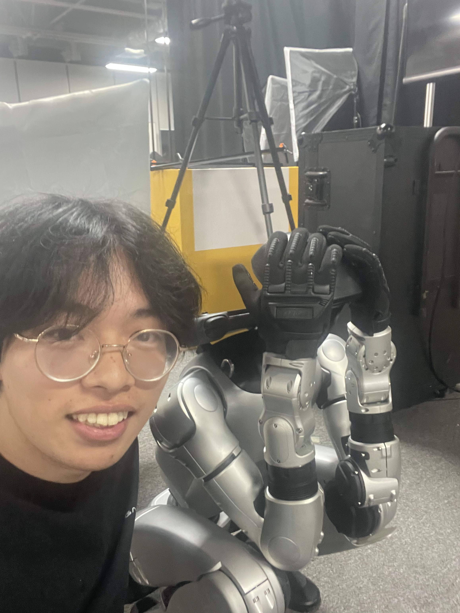

|
薛晗 | Han Xue I am a first-year Ph.D. student at the College of AI, Tsinghua University, advised by Prof. Li Yi. My research is supported by GALBOT. I received my B.E. in Computer Science from Tsinghua University. My research focuses on enabling humanoid robots to acquire complex real-world skills in a scalable and sustainable manner. I am particularly interested in moving beyond motion imitation toward automated generation and effective utilization of multi-source data.
Tracking targets, even in dreams.
|
 |
{kind=link}
Research |
|
|
Learning Athletic Humanoid Tennis Skills from Imperfect Human Motion Data
Zhikai Zhang*, Haofei Lu*, Yunrui Lian*, Ziqing Chen, Yun Liu, Chenghuai Lin, Han Xue, Zicheng Zeng, Zekun Qi, Shaolin Zheng, Qing Luan, Jingbo Wang, Junliang Xing, He Wang, Li Yi arXiv, 2026 project page / arXiv / code (LATENT) 
We propose LATENT, a system that Learns Athletic humanoid TEnnis skills from imperfect human motioN daTa. |
|
|
Collision-Free Humanoid Traversal in Cluttered Indoor Scenes
Han Xue*, Sikai Liang*, Zhikai Zhang*, Zicheng Zeng, Yun Liu, Yunrui Lian, Jilong Wang, Qingtao Liui, Xuesong Shi, Li Yi arxiv, 2026 project page / arXiv / code (Click-and-Traverse) 
We propose Humanoid Potential Field (HumanoidPF) for collision-free traversal in cluttered indoor scenes with dexterous and versatile skills. |
|
|
Track Any Motions under Any Disturbances
Zhikai Zhang*, Jun Guo*, Chao Chen, Jilong Wang, Chenghuai Lin, Yunrui Lian, Han Xue, Zhenrong Wang, Maoqi Liu, Jiangran Lyu, Huaping Liu, He Wang, Li Yi arXiv, 2025 project page / arXiv / code (OpenTrack) 
We present Any2Track, a foundational humanoid motion tracker to track any motions under any disturbances. |
|
|
Unleashing Humanoid Reaching Potential via Real-world-Ready Skill Space
Zhikai Zhang*, Chao Chen*, Han Xue*, Jilong Wang, Sikai Liang, Zongzhang Zhang, He Wang, Li Yi RA-L, 2025 LEAP Workshop @ CoRL, 2025 (Spotlight) project page / arXiv / code (OpenWBT) 
We present Real-world-Ready Skill Space (R2S2), a skill space that encompasses and encodes various real-world-ready motor skills. |
|
|
GenN2N: Generative NeRF2NeRF Translation
Xiangyue Liu, Han Xue, Kunming Luo, Ping TAN, Li Yi CVPR, 2024 project page / arXiv / code (GenN2N) 
GenN2N is a unified NeRF-to-NeRF translation framework for various NeRF translation tasks such as text-driven NeRF editing, colorization, super-resolution, inpainting, etc. |